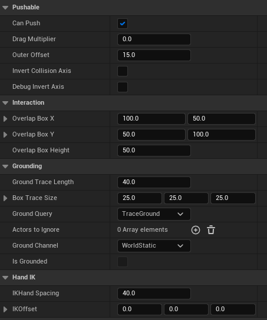
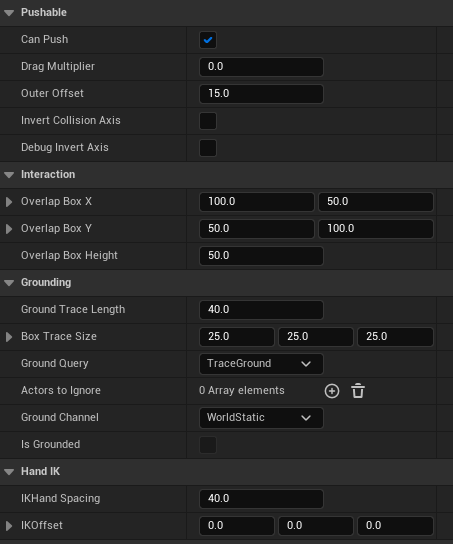

- Game
- Unreal
Role: Gameplay, Animation & UI Programmer
Genre: Third Person Puzzle Shooter
Engine: Unreal Engine
Team Size: 12
Platform: PC
Time: 7 weeks
Rouse is a 3rd-person physics-based puzzle platformer. You play as Rose who finds herself trapped inside the dream of her little brother. The game's main mechanic is a gun that the player can use to shoot and physically affect elements in the map (freezing, inverting gravity or levitating and sticking).
- Third person aiming and physics based shooting with projectile trajectory.
- Object grabbing and dragging.
- System for puzzles.
- Procedural animations using IK.
The projectile will always land where the player is aiming. The max height a projectile will reach (H) is the only variable that can be tweaked in this system where R is the distance to the point that's being aimed at. If we solve the following system of equations for Initial Velocity (v0) and Initial Angle (ϴ), we'll know the necessary impulse and direction to exert on the projectile to reach the point that is being aimed. I made this solver into a blueprint function library so that we could easily prototype it in BP aswell.

| Property: | Function: |
|---|---|
| Height (H) | Projectile's max. height |
| Distance (R) | Distance from projectile origin (gun) to aimed point |
| Initial Angle (ϴ) | Necessary initial angle to reach aimed point |
| Initial Velocity (v0) | Necessary impulse to reach aimed point |
Since we didn't have an animator on the team, we adapted by recurring to mostly procedural animation and using IK.
- The character's upper body will yaw to face the aimed point. It will also pitch to match the initial angle that the projectile is being shot at.
- The character's bones are individually translated and rotated to simulate recoil.
- The character will also move its body (both lower and upper) depending on the speed that camera is being turned.


- Dynamic crosshair that will sync to the gun's firerate. Crosshair will play a rotation animation when aim target is in range but will be static and lower its opacity if target is not in range.
- When pointing at an interactable that is affected by a power, a circle will show that will be filled on player retract.
- Gameboy shows color of selected power and its corresponding ammo amount in world space.
- Some more animations and visal cues are used to communicate when a retract is done or when shooting with no ammo.

The behaviour for this mechanic is mostly inspired by Little Nightmares' dragging system where the player needs to interact with an object to grab it and only then can drag it around. The object will be dropped if that same button is pressed or if it goes out of range.
Two actor components are used on this system. One on the object that can be pushed and another one on the entity that can push objects. This pattern allows for a modular system where new objects could be very easily added and be pushed around by the existing or new characters.
 

- Using IK to place hands on object realistically. Hand spacing and offset from the objects' origin can be tweaked depending on the object size and shape.
- individually rotating bones to match direction that character is trying to push at. This works for both when the character is succesfully pushing or when it grabs an object but can't push it. In this last case, it will just lean towards the predicted movement direction (taken from input instead of the actual velocity).
- Character will also "holster" gun when grabbing and move each hand to its IK target.


The behaviour is inspired by an AND processor where all the output responses will get triggered if all buttons are pressed. The processor’s behaviour is easily customizable to work like a NAND, OR, XOR, etc.
Each button’s behaviour is very open to customization. Levers and sticky timed buttons were prototyped but didn’t make it to any puzzle in the final game.
An event is called on each response component being triggered which allows for a modular system. Multiple and diverse events can be called: Opening doors, UI prompts, particle effects, etc. These were exposed to BP and mostly worked on by designers.

- Importance of QA: We didn't have a QA team working full-time on this project so we had to adapt by dedicating about an hour of playtesting every couple of days by the development team. This obviously took precious time away from developing that, in my opinion, ended up being spending in testing.
- Blueprint vs C++: Due to time constraints, some of the code that was prototyped in Blueprint ended up never making it to C++. This ended up causing for some bloated classes where designers struggled to navigate and prototype their mechanics. Making this switch to C++ later in the project would've turned out to be too time consuming but I feel like if we had taken the time to gradually make this change throughout production, we could've saved same unnecessary headaches in the long run and provide cleaner and more understandable blueprints for the rest of the development team to work with.